Contents
- Load data & Setup Filters
- 3.1: Deconvolution Experiment for 1D Filters
- 3.1.1: Restoration Filter
- 3.1.2 Worst-Case Error
- 3.1.3 An Echo Filter
- 3.2 Cascading Two Systems
- 3.2.1 Overall Impulse Response
- 3.2.2 Distoring and Restoring Images
- 3.2.3 A Second Restoration Experiment
- Extra Credit: Filtering Music Waveform
- FUNCTIONS
% This file contains the lab exercises for P-09
Load data & Setup Filters
This section includes all the necessary data for running all sections. RUN THIS FIRST! x1: Stair-step input signal x2: Speech waveform ("Oak is strong") - f = 8k samples/sec xtv: Actual scan line from a digital image h1: FIR coefficients h2: FIR coefficients (more)
clc clear load labdat.mat load echart.mat % Weighted first-difference filter q = 0.9; filt1 = [1 -q]; % Weighted mean filter M = 22; r = 0.9; filt2 = zeros(1,M); for n = 1:length(filt2)+1 filt2(n) = 0.9^(n-1); end
3.1: Deconvolution Experiment for 1D Filters
This section applies a first-difference filter to a signal.
% Generate a signal xx_3_1 = 256*(rem(0:100,50)<10); % Filter xx_3_1 w_n_3_1 = firfilt(filt1,xx_3_1); nn=1:75; % Bounds for graphing figure(1) subplot(2,1,1); stem(nn,xx_3_1(nn)); title('x[n]'); xlabel('n'); subplot(2,1,2); stem(nn,w_n_3_1(nn),'filled'); title('w[n]'); xlabel('n');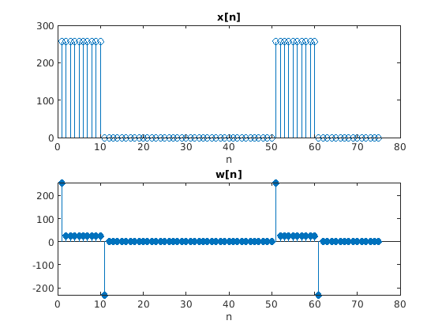
3.1.1: Restoration Filter
This section restores the destorted signal in the previous section and finds the error between the original and restored signal.
% a) Process w_n with restoration filter r = 0.9; M = 22; yy_3_1_1 = restore(w_n_3_1,M,r); % b) Plot the original and restored signals figure(2) subplot(2,1,1);stem(nn,xx_3_1(nn));title('x[n]');xlabel('n'); subplot(2,1,2);stem(nn,yy_3_1_1(nn),'filled');title('y[n]');xlabel('n'); % c) Error estimation % Define an error vector that is the absolute difference between signals. for n = 1:length(xx_3_1) error(n)=abs(xx_3_1(n)-yy_3_1_1(n)); end n=1:50; % Bounds for plotting figure(3);plot(n,error(n));title('Error');ylabel('Difference');xlabel('n');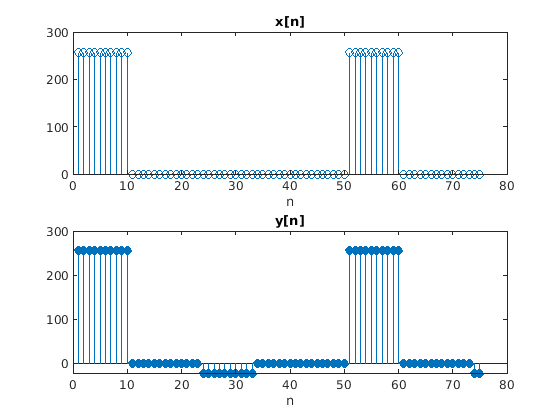 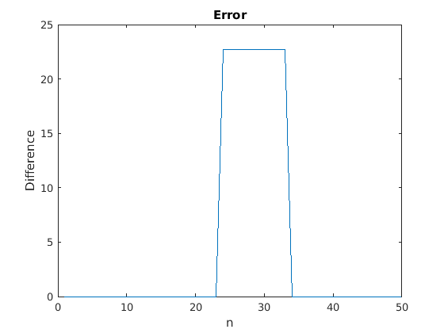
3.1.2 Worst-Case Error
This section finds the maximum error between the original and restored signal.
worst_case=max(error);
3.1.3 An Echo Filter
This section applies an echo to an audio signal at a delay of P samples.
% a) Delay = 0.2s @ 90% given Fs = 8kHz % This section finds the number of samples for a given time delay. Fs = 8e3; r = 0.9; % 90% P = Fs * 0.2; % 1600 % b) Describe filter coefficients and determine length. % The coefficients will be 1 followed by P-2 zeros followed by 0.9 and % the length will be P+1 bb_3_1_3 = zeros(1,P); bb_3_1_3 = [1 bb_3_1_3 0.9]; % c) Implement echo filter on x2 from labdat.mat echo=firfilt(bb_3_1_3,x2); sound(echo,Fs); % This is crazy distorted... but so is original x2
3.2 Cascading Two Systems
This section explores the effects of cascading two filters meant to cancel each other out.
% Filter 1: w[n] = x[n] - q*x[n-1] q = 0.9; filt1 = [1 -q]; % Filter 2: From 3.1.1 (restoration filter) M = 22; r = 0.9; filt2 = zeros(1,M); for n = 1:length(filt2)+1 filt2(n) = 0.9^(n-1); end % Frequency response of individual filters + system N=150; ech90=-pi:2*pi/N:pi-2*pi/N; H1=fft(filt1,N); H2=fft(filt2,N); Hsys=H1.*H2; figure(4) plot(ech90/(2*pi),abs(H2));hold on plot(ech90/(2*pi),abs(H1)); plot(ech90/(2*pi),abs(Hsys));hold off title('Cascade of FIR Filters H_1, H_2'); legend('|H_1|','|H_2|','|H_S_Y_S|'); xlabel('\omega');ylabel('|H(\omega)|');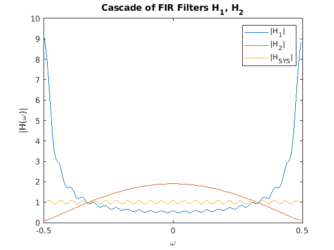
3.2.1 Overall Impulse Response
This section applies the cascaded filter system to an input signal.
% a) Implement cascade with q=0.9, r=0.9, M=22. % Use two calls to firfilt() y_3_2_1 = firfilt(filt2, firfilt(filt1, x1)); % Plot impulse response. figure(5); hold on plot(x1) plot(y_3_2_1(1:length(x1))) title('Deconvolution'); legend('original','deconv'); xlabel('n'); hold off % b) Work out impulse response h(n) of this cascade by hand. Verify % correctness. % c) What condition on h1(n) and h2(n) needs to be met for this to be % perfect deconvolution? ANS: H1H2 = 1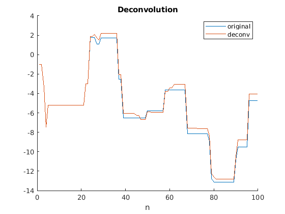
3.2.2 Distoring and Restoring Images
This section explores cascaded restoration filters applied to 2D images.
% b) Apply filt1 horizontally and then vertically (q=0.9) w = conv2(echart,filt1); % Horizontal ech90 = conv2(w,filt1'); % Vertical % c) Deconvolve with filt2 (M=22, r=0.9) y = conv2(ech90,filt2); y_fin = conv2(y,filt2'); figure(6); image(echart); title('Original image'); figure(7); image(ech90); title('Dist'); figure(8); image(y_fin); title('Deconv'); % Calculate how big the ghosts (echoes) are using worst-case error to say % how big the ghosts are relative to "black-white" transitions which are % 0-255: error2D(echart,y_fin,9) % % % Extra: Get rid of border effects by padding. These pads are an extension % % of the MEAN of the 10 adjacent element values. % r_idx = length(ech90); % Right-most index of ech90 % for n=1:M % for row=1:size(ech90,1) % pad_l(row,n)=mean(ech90(1,1:10)); % pad_r(row,n)=mean(ech90(1,r_idx-10:r_idx)); % end % end % ech90_pad = [pad_l ech90 pad_r]; % y=conv2(ech90,filt2); % y_fin=conv2(y,filt2'); % figure(10); image(y_fin); title('Deconv w/ Padding');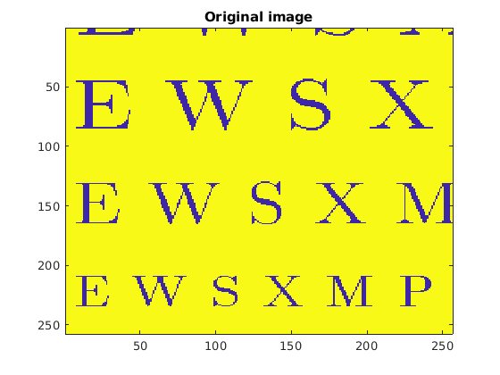 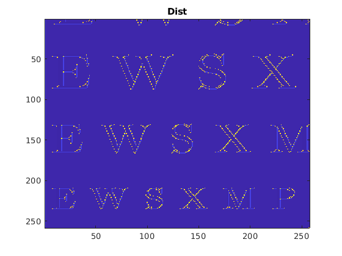 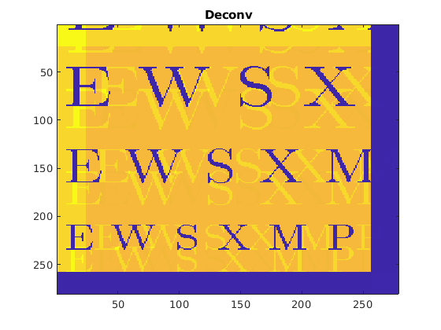 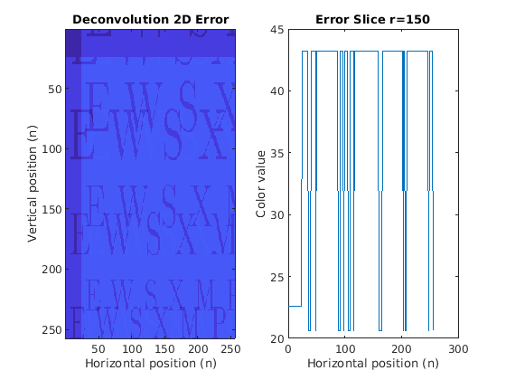
3.2.3 A Second Restoration Experiment
This section aims at improving restoration by adjusting filter length M
% a) Deconvolve with different number of taps % M = 11, r = 0.9 filt2_1 = fir(11,0.9); y1 = conv2(filt2_1',ech90); % Deconvolve vertically y1_fin = conv2(filt2_1,y1); % Deconvolve horizontally figure(10); image(y1_fin); title('Deconv: M = 11'); % M = 22, r = 0.9 filt2_2 = fir(22,0.9); y2 = conv2(filt2_2',ech90); % Deconvolve vertically y2_fin = conv2(filt2_2,y2); % Deconvolve horizontally figure(11); image(y2_fin); title('Deconv: M = 22'); % M = 33, r = 0.9 filt2_3 = fir(33,0.9); y3 = conv2(filt2_3',ech90); % Deconvolve vertically y3_fin = conv2(filt2_3,y3); % Deconvolve horizontally figure(12); image(y3_fin); title('Deconv: M = 33'); % Error error2D(echart,y1_fin,13) error2D(echart,y3_fin,14)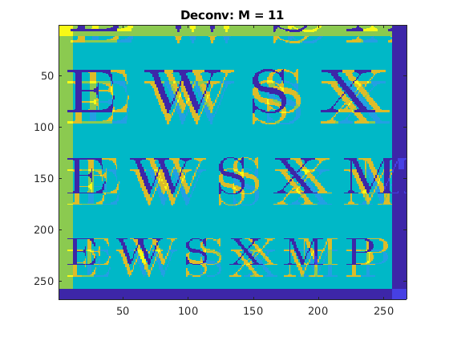 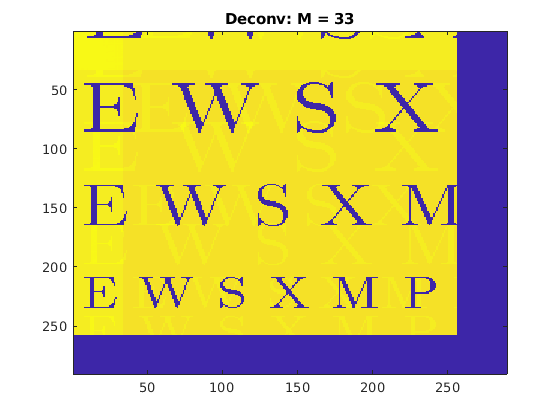 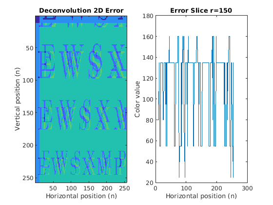 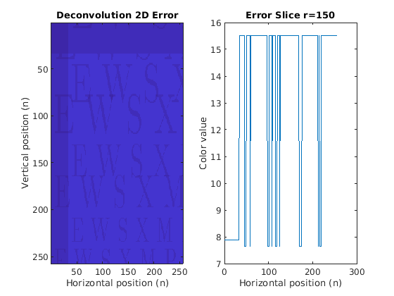
Extra Credit: Filtering Music Waveform
This section explores echoing and reverb filters.
[nggyu,Fs] = audioread('nggyu.wav'); % Range of interest: 1.915e6:2.65e6 sample = nggyu(1.915e6:2.65e6); % Fs = 44100 Hz a = 0.95; % Strength of echo T = 0.15; % Delay (s) P = T*Fs; % # of samples to achieve delay % a) Define the delay filter coefficients for 0.15s delay delay = zeros(1,P-1); delay = [1/(1+a) delay a/(1+a)]; % b) Filter the song file. % QUESTION: Describe sound and use impulse response to % explain why it sounds that way. song_delay = firfilt(delay,sample); clear sound %sound(song_delay,Fs) % DJ, rock dem beatz % c) Reverberation (multiple echoes) Cascade the filters. % QUESTION: Derive impulse response for cascade of 4 delays song_delay4 = firfilt(delay, firfilt(delay, firfilt(delay, firfilt(delay, sample)))); %clear sound sound(song_delay4,Fs) % d) QUESTION: Describe sound you hear and use impulse response to explain % e) Plot the original + delay figure; inout(sample, song_delay, 1, Fs, 4); title('Single delay'); figure; inout(sample, song_delay4, 1, Fs, 4); title('Reverb'); audiowrite('nggyu_reverb.wav',song_delay4,Fs);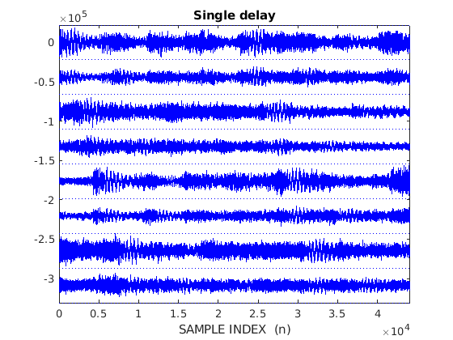 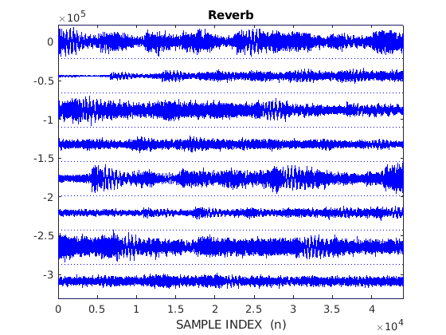
FUNCTIONS
function y = restore(w,M,r) % This is a restoration filter. % w: Filtered signal % M: Number of taps % r: Weighted modifier y = zeros(1, length(w)); for n = 1:length(w) for l = 0:M if (n-l < 1) || (n-l > length(w)) continue end y(n) = y(n) + (r^l)*w(n-l); end end end function y = fir(M,r) % This function creates a FIR filter based on filter2 equation % M: Number of taps % r: Weighted modifier y = zeros(1,M); for n = 1:length(y) y(n) = r^(n-1); end end function error2D(orig,recon,n) % This function calculates and plots the difference between % an original and reconstructred signal % orig: Original MxN image % recon: Reconstructed MxN image % n: figure # for r=1:size(orig,1) for c=1:size(orig,2) error(r,c)=abs(orig(r,c)-recon(r,c)); end end figure(n); subplot(1,2,1); image(error);title('Deconvolution 2D Error'); ylabel('Vertical position (n)');xlabel('Horizontal position (n)'); subplot(1,2,2); plot(error(150,1:end));title('Error Slice r=150'); ylabel('Color value');xlabel('Horizontal position (n)'); end